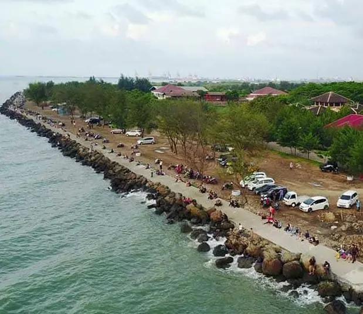
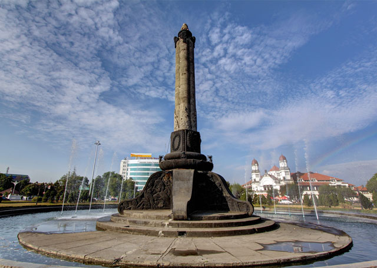

Tempat Wisata

Simpang Lima
Simpang Lima Semarang adalah sebuah lapangan yang berada di pusat kota Semarang.
Jl. Seroja Dalam III No.10, Karangkidul, Kec. Semarang Tengah, Kota Semarang, Jawa Tengah 50136

Pantai Marina
Jalan kayu tepi laut sepanjang pantai berpaving, populer dengan panorama sunset, kios jajan & spot memancing.
Tawangsari, Kota Semarang, Jawa Tengah 50144

Tugu Muda
Tugu Muda Semarang, Monumen Bersejarah untuk Mengenang Jasa Pahlawan.
Jl. Pandanaran, Mugassari, Kec. Semarang Sel., Kota Semarang, Jawa Tengah 50245Museum Ronggowarsito
Museum Ranggawarsita merupakan sebuah aset pelayanan publik di bidang pelestarian budaya, pendidikan dan rekreasi.
Jl. Abdulrahman Saleh No.1, Kalibanteng Kidul, Kec. Semarang Barat, Kota Semarang, Jawa Tengah 50149